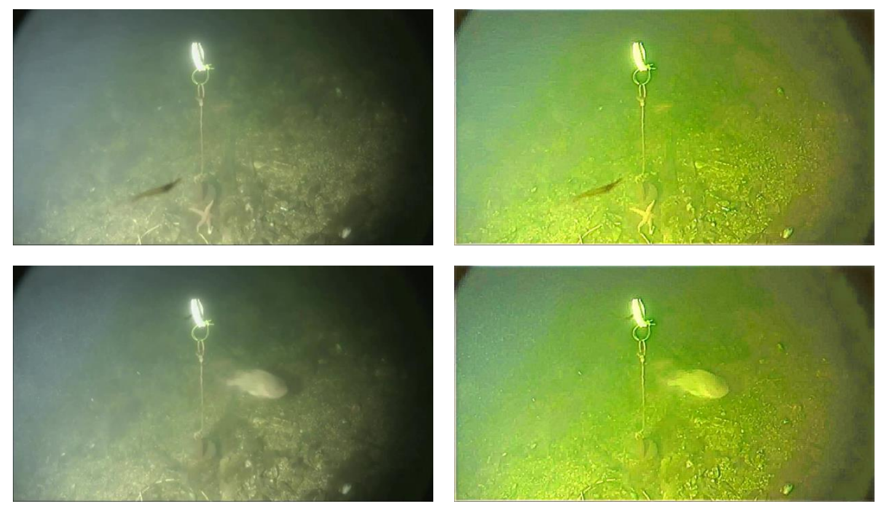
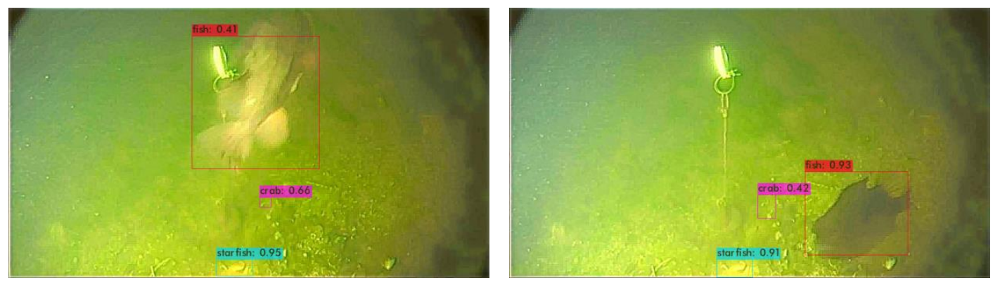

Underwater Detection
Abstract
With the goal of recovering high-quality image content from its degraded version, image restoration finds numerous applications in fields such as surveillance, computational photography, medical imaging, and remote sensing. Recently, convolutional neural networks (CNNs) have significantly improved the image restoration process. MIRNet is a novel architecture designed to maintain spatially precise high-resolution representations throughout the network while extracting strong contextual information from low-resolution representations. Additionally, YOLO, an efficient real-time object detection algorithm, enhances the practicality of this combined approach by accurately identifying objects within restored images. This integration addresses the dual needs of image restoration and object detection in various applications. The source code and pre-trained models are available at the MIRNet repository: https://github.com/swz30/MIRNet.
Introduction
Image restoration and enhancement are critical tasks in computer vision, aimed at recovering high-quality images from degraded inputs. Applications span across surveillance, computational photography, medical imaging, and remote sensing. Traditional image restoration pipelines either focus on full-resolution processing or encoder-decoder architectures. MIRNet and YOLO combine these approaches to provide a solution that satisfies both spatial precision and contextual robustness, making it ideal for real-world tasks.
Methodology
MIRNet Architecture
MIRNet integrates full-resolution processing and multi-scale feature extraction. Its main branch ensures spatial precision, while parallel branches enhance contextual features. The multi-scale residual blocks, with parallel convolution streams, information exchange, and attention mechanisms, capture and aggregate features from multiple scales, preserving high-resolution spatial details.

YOLO Object Detection
YOLO (You Only Look Once) processes the entire image in a single pass, dividing it into a grid and predicting bounding boxes and class probabilities. This fully convolutional approach enhances detection speed and efficiency by treating object detection as a regression problem, allowing global reasoning about object classes and appearances.
Implementation
MIRNet processes images in full resolution to retain spatial details, while parallel branches capture contextual information at multiple scales. YOLO’s architecture leverages these restored images, providing real-time object detection with high precision. The combination ensures comprehensive restoration and accurate object identification.
Results and Discussion

The integration of MIRNet and YOLO demonstrates significant improvements in both image restoration and object detection. MIRNet achieves a balance between spatial precision and contextual robustness, while YOLO’s efficient detection pipeline enhances performance. The combined approach ensures high-resolution details and enriched contextual information, making it suitable for diverse applications.
Conclusion
MIRNet and YOLO together form a powerful tool for image restoration and object detection, combining spatial precision, contextual robustness, and real-time performance. This integrated approach addresses the dual needs of recovering high-quality images and accurately detecting objects, enhancing the overall effectiveness in various fields. Future improvements could involve refining the network architecture and exploring additional datasets to further validate and extend capabilities.